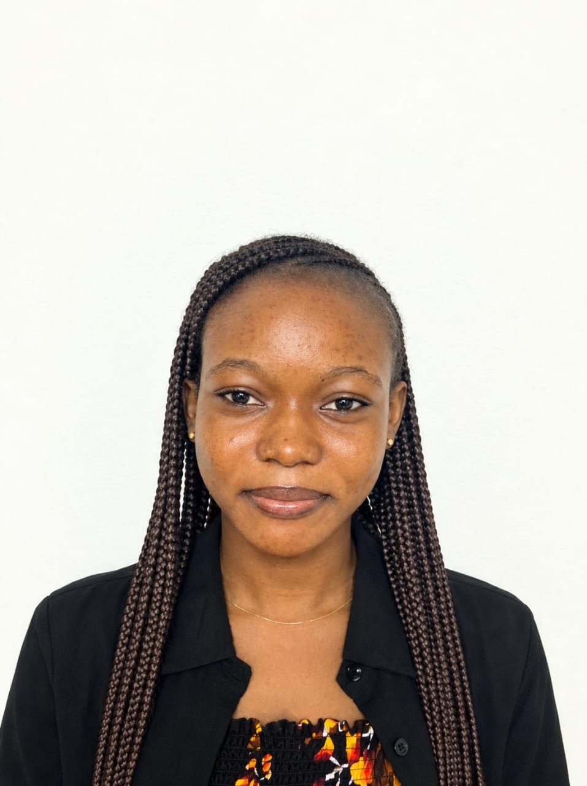
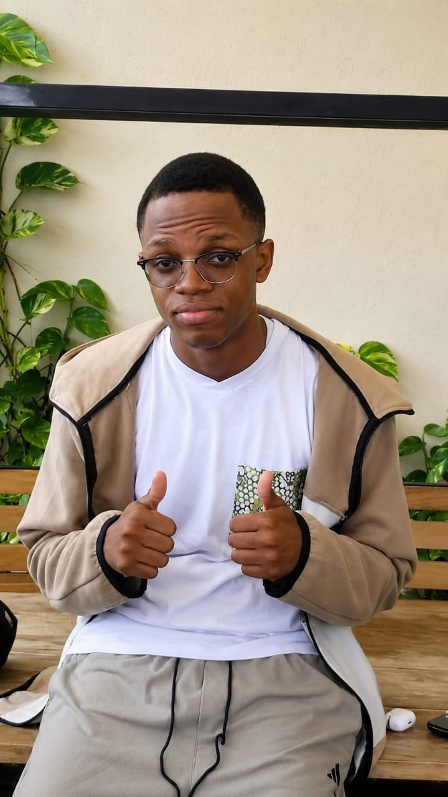

L'arnaque
commence
par un appel.
KORA détecte la fraude et les comportements suspects dans vos transactions numériques : appels, SMS, WhatsApp, captures. En français et en fon.
Trois arnaques,
un même scénario
- 01Le faux dépôtUn faux SMS « vous avez reçu », puis un appel pressant : « renvoie-moi l'argent envoyé par erreur »
- 02Le faux service clientUn appel « mise à jour, compte bloqué, gain » qui finit par : « dicte-moi ton code PIN »
- 03Le proche piratéSur WhatsApp, un ami « en urgence » demande un prêt ou un code à 6 chiffres
de clients actifs des services financiers mobiles au Bénin (ARCEP, 2025)
de FCFA de préjudice déclaré pour escroqueries et fraudes financières (CNIN, 2025)
déjà victimes, sondage de 800 personnes ; 46 % ne savent pas reconnaître une arnaque
Sources : ARCEP Bénin 2025 · CNIN 2025 · Mobile Money Phone Scam Survey (Kaggle, Ngaoundéré) · reportages Africa 24 et France 24 sur les arnaques au Mobile Money
KORA suit l'arnaque
à chaque étape
Il écoute
Appel en haut-parleur, en français ou en fon. À la fin : arnaque ou pas.
Il lit
SMS, WhatsApp, réseaux sociaux, appli de paiement : une capture avec la bulle.
Il questionne
Qui appelle ? Que demande-t-il ? On discute par message ou à voix haute.
Il alerte
Verdict, raisons vérifiables, bon réflexe : ne jamais donner son code.
Pas une appli de plus :
un bouclier sur toutes
Les protections existantes
- Chaque opérateur, banque ou appli protège son propre service
- Côté serveur, après coup
- Elles ne voient ni l'appel, ni le WhatsApp qui précède le paiement
KORA
- Indépendant : Mobile Money, banques, applis de paiement, réseaux sociaux
- La bulle flotte sur toutes les applis : on lui partage l'écran ou l'appel d'un geste
- Avant le paiement, au moment où l'arnaque se joue
- Les messages sont analysés dans le téléphone
La démo,
puis un appel
en direct
- 1Le SMS « agent MTN » arrive
- 2KORA analyse, Korachoupi s'inquiète
- 3Verdict rouge et bon réflexe
- 4En direct : la bulle suit un appel
Le modèle décide.
Les règles expliquent.
Appel,
capture, texte
Appel transcrit (Whisper en français, MMS en fon), capture lue dans le téléphone, messages.
964 Ko,
hors ligne
N-grammes de caractères et régression logistique, plus le contexte : canal, qui appelle, ce qu'il demande.
Écrit et
à voix haute
Risque, raisons et bon réflexe, en français ou en fon. KORA n'invente jamais une raison.
3× plus d'arnaques repérées
3,5× moins de fausses alertes
Arnaques détectées
Fausses alertes
AUC arnaque contre normal, sur de vrais messages jamais vus à l'entraînement
0,728 → 0,964
Notre version précédente, entraînée sur des messages inventés, contre KORA-lite avec 267 vrais messages (AUC, sur de vrais messages)
Référence : règles seules (au moins un signal). Seuil de risque 50 %. Vrais messages : stop-arnaque-237 (CC-BY-4.0), validation croisée groupée à 5 plis, sans fuite. Détails : resultats/kora_lite_validation_croisee.json et comparaison_sources.json.
Des données sourcées,
un test refait en une minute
| Source | Contenu | Licence | Utilisation |
|---|---|---|---|
| Messages KORA | 5 342 messages issus de 142 modèles d'arnaques béninoises | Projet | Entraînement |
| stop-arnaque-237 | 267 vrais messages (arnaques et vrais SMS) | CC-BY-4.0 | Entraînement et test |
| J'aime Ma Langue | 134 h de voix fon au téléphone, 650 voix | CC-BY-SA-4.0 | Mesure de l'oreille fon |
| Conversations en anglais | 4 800 appelsAUC 0,947 → 0,875 avec elles | non publiée | Écartées |
Nos limites
- Vrais messages venus du Cameroun
- Fon pas encore relu par des locuteurs ; oreille fon : 54 % d'erreurs par mot
- Appels pas encore mesurés sur de vrais appels
Découpage sans fuite (par formulation et par voix) · même résultat dans l'application et en Python sur 624 messages · version unique signée 1.0.12
Gratuit pour vous,
financé par les partenaires
Opérateurs,
banques, fintechs
MTN, Moov, Celtiis, banques, microfinances, applis de paiement.
KORA-lite
Appels, messages et captures vérifiés, sur toutes les applis.
Particuliers,
commerçants
Aucun abonnement.
Prêt à tester,
voici ce qu'il faut
Déjà là
- APK Android signée, mises à jour automatiques
- La bulle : capture de l'écran ou suivi d'un appel
- Appels transcrits en français et en fon, verdict dit à voix haute
- Les messages en français sont analysés dans le téléphone
Les moyens
- Un opérateur (MTN, Moov ou Celtiis) : vérifier l'expéditeur, diffuser
- De vrais SMS et appels béninois, en français et en fon, collectés avec consentement
- Des locuteurs fon pour relire les traductions
- Un GPU : entraîner AfroXLMR et l'oreille fon (J'aime Ma Langue), service fon sans quota
Les validations
- Conformité au Code du numérique (APDP) : données personnelles
- Test sur le terrain avec des utilisateurs et des agents distributeurs
- Objectif : au moins 85 % des arnaques signalées et au plus 5 % de fausses alertes sur des SMS béninois
Merci.
KORA décroche avec vous.
kora-0-01.vercel.app


